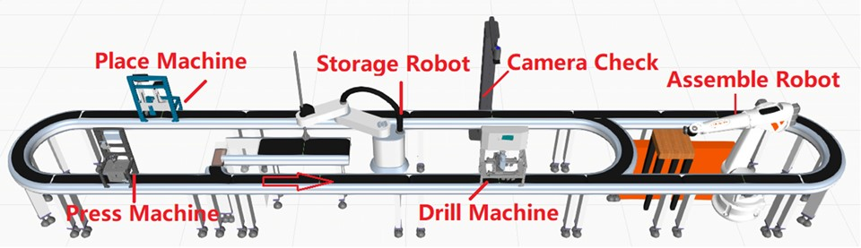

Projects
Scheduling of Manufaturing Systems Find here
|  |
Establishing 3D components models of the production system, such as robots, conveyors, sensors, and process machines in the Visual Components simulation environment. Then the reconfigurable controller of the manufacturing line system based on the discrete event framework will be applied on it to verify the correctness of the controller and evaluate the system's performance for the scheduled production order. Under the ideal situation, all the raw materials in the manufacturing line systems are supposed to be infinite. But in reality, it needs the help of materials handling system and (AGV) Automatically Guided Vehicle fleet management system to complete the supply, this part can be implemented in the simulated system as well. Our team members already had the preliminary results about the simulation of a mini-line assembling system and tested the connection with the controller generated software according to the product work plan.
AGV Scheduling of Material Handling Sytems Find here
With the existence of a mini-line manufacturing system located in DELTA-NTU corporation lab and the corresponding simulation in the software Visual Components, we would like to connect the simulated system with the reality via OPC-UA communication protocol. On the one hand, the simulated systems in Visual Components can detect the change of variable (I/O s) values and understand the current condition of the real manufacturing system, such as the sensor information of machine will tell the location of the processed product. On the other hand, the simulated system can change the value of control variables to start or stop the operation of machines. After all the test of connection for all components is finished, the manufacturing line system will be set in the manual mode and then the scheduled control strategy will be applied.
Hardware in the loop Simulation of Impact Line
 |
There will be one Automated Guided Vehicle (AGV) to load Printed Circuit Boards (PCBs) with a metal bottom casing onto the starting point. Next, at the Precision, Pick Object, Positioning (PPOP) station, components and then the upper cover will be placed onto the PCB. At the next station, the Automated Optical Inspection (AOI), the cased item will be flipped over and there is an inspection camera to make sure the parts have been positioned appropriately. When the inspection has been passed, the item is sent to the next station by the smart transporter. However, if the inspection fails, then this smart transporter will move the failed product to a drop off point. Finally, the laser soldering will solder the components to the PCB and the product is achieved.
Including other demo videos
To be added from Youtube